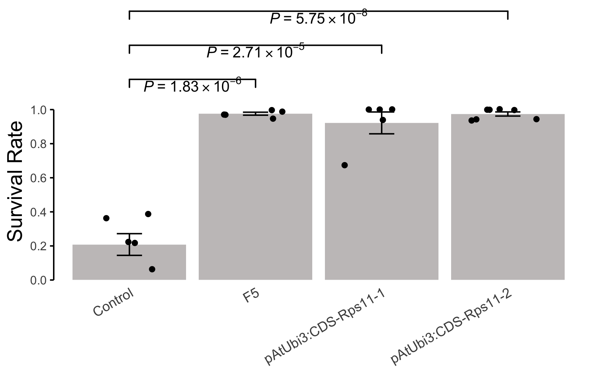

![]()
library(tidyverse)
library(here)
library(ggsignif)
library(ggh4x)
dfb <- read.csv(here("projects", "data", "221001_barplot.csv"), header = FALSE)
dfb
## V1 V2 V3 V4 V5 V6 V7 V8
## 1 Control 0.06 0.00 0.39 0.22 0.22 0.36 NA
## 2 F5 0.99 1.00 0.95 0.97 0.97 NA NA
## 3 pAtUbi3:CDS-Rps11-1 1.00 0.67 0.94 1.00 1.00 NA NA
## 4 pAtUbi3:CDS-Rps11-2 0.94 1.00 0.94 0.94 1.00 1.00 1
dfb.1 <- dfb %>%
pivot_longer(!V1) %>%
select(V1, value) %>%
na.omit()
dfb.1
## # A tibble: 23 × 2
## V1 value
## <chr> <dbl>
## 1 Control 0.06
## 2 Control 0
## 3 Control 0.39
## 4 Control 0.22
## 5 Control 0.22
## 6 Control 0.36
## 7 F5 0.99
## 8 F5 1
## 9 F5 0.95
## 10 F5 0.97
## # ℹ 13 more rowsPrepare data
Define errorbar function
Add errorbar and p-value
p <- ggplot(data = dfb.1, aes(x = V1, y = value)) +
stat_summary(
geom = "bar",
fun = mean,
fill = "#c6c3c3"
) +
stat_summary(
geom = "errorbar",
fun.min = ebbottom,
fun.max = ebtop,
width = 0.2
) +
geom_jitter(width = 0.3) +
geom_signif(
comparisons = list(
c("Control", "F5"),
c("Control", "pAtUbi3:CDS-Rps11-1"),
c("Control", "pAtUbi3:CDS-Rps11-2")
),
test = t.test,
test.args = list(
var.equal = T,
alternative = "two.side"
),
y_position = c(1.1, 1.3, 1.5),
annotations = c(""),
parse = T
) +
annotate(
geom = "text",
x = 1.5, y = 1.15,
label = expression(italic(P) ~ "=" ~ 1.83 %*% 10^-6)
) +
annotate(
geom = "text",
x = 2, y = 1.35,
label = expression(italic(P) ~ "=" ~ 2.71 %*% 10^-5)
) +
annotate(
geom = "text",
x = 2.5, y = 1.55,
label = expression(italic(P) ~ "=" ~ 5.75 %*% 10^-8)
) +
scale_y_continuous(
expand = c(0, 0),
limits = c(0, 1.6),
breaks = seq(0, 1, 0.2)
) +
theme_minimal() +
theme(
panel.grid = element_blank(),
axis.line.y = element_line(),
axis.ticks.y = element_line(),
axis.title.y = element_text(
hjust = 0.25,
size = 15
),
axis.text.x = element_text(
angle = 30,
hjust = 1,
size = 10
)
) +
guides(y = guide_axis_truncated(
trunc_lower = 0,
trunc_upper = 1
)) +
labs(x = NULL, y = "Survival Rate")
p